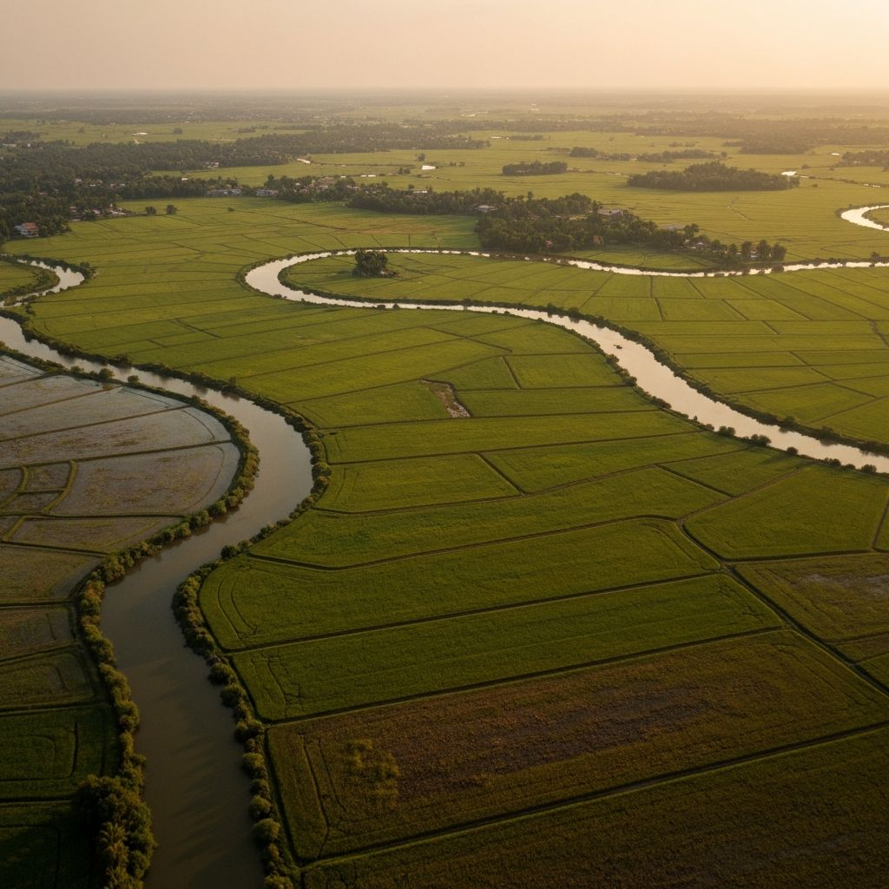
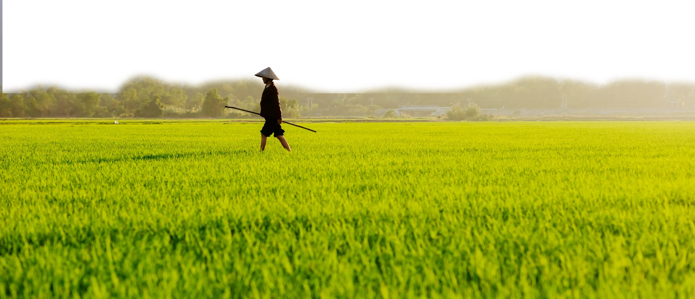

Khi thiên nhiên ngày càng khắc nghiệt và cuộc sống ngày một khó khăn hơn. Câu hỏi đặt ra giờ đây không còn là làm sao để giữ người dân ở lại quê hương, mà là làm sao để họ có thể sống tốt dù lựa chọn ở lại hay rời đi. Điều này đòi hỏi một cách tiếp cận khác, sâu hơn và thực chất hơn.
Ngày 17/11/2017, Chính phủ ban hành Nghị quyết 120/NQ-CP về phát triển bền vững ĐBSCL thích ứng với biến đổi khí hậu. Đây là văn bản đầu tiên chính thức thừa nhận rằng vùng này phải "thuận thiên", không còn cố gắng duy trì mô hình canh tác cũ, mà phải tái cấu trúc toàn diện theo hướng thích ứng.
 sử dụng máy bay phun thuốc trên đồng ruộng.jpg)
PHẦN 01Tìm đường cứu đất
Sau 7 năm triển khai Nghị quyết 120, mô hình lúa - tôm luân canh tại huyện Thạnh Phú, Bến Tre đã giúp hơn 12.000 hộ thoát nghèo. Bằng cách trồng lúa mùa mưa và nuôi tôm mùa khô, thu nhập nông dân tăng vọt từ 45 triệu lên mức 120 đến 180 triệu đồng mỗi hecta một năm. Việc chuyển đổi từ độc canh lúa sang thích ứng với xâm nhập mặn đã biến thách thức thành lợi thế kinh tế rõ rệt.
Anh Nguyễn Văn Hùng, một nông dân 38 tuổi ở xã An Thạnh, kể: "Trước đây tôi trồng ba vụ lúa nhưng thường xuyên mất trắng vì mặn. Bây giờ tôi chỉ làm một vụ lúa, thời gian còn lại chuyển sang nuôi tôm. Con tôm rất hợp với nước mặn, mà nguồn nước này thì ở quê mình sẵn có và miễn phí."
sang tôm-lúa (2017–2023)
bình quân trên mỗi ha
tưới tiêu cần thiết
PHẦN 02Công nghệ: đòn bẩy mới
Nếu thuận thiên là triết lý thì công nghệ chính là công cụ quan trọng giúp người nông dân hiện thực hóa mục tiêu phát triển nông nghiệp thông minh. Điển hình tại huyện Cù Lao Dung, tỉnh Sóc Trăng, việc ứng dụng hệ thống tưới tiêu tiết kiệm điều khiển qua điện thoại di động đã tạo ra bước ngoặt lớn trong canh tác cây ăn trái. Thay vì phải mất hàng tuần để tưới thủ công cho diện tích lớn, các nhà vườn giờ đây chỉ cần hơn một giờ đồng hồ để hoàn thành công việc thông qua những thao tác đơn giản trên ứng dụng. Giải pháp này không chỉ giúp tiết kiệm nguồn nước, giảm chi phí sản xuất mà còn bảo vệ cấu trúc đất tự nhiên, giúp cây trồng phát triển tươi tốt và giảm thiểu sự phụ thuộc vào các điều kiện khắc nghiệt của môi trường.

Tại làng du lịch Long Ẩn, công nghệ số đang trở thành cầu nối đưa sản phẩm nông sản và dịch vụ du lịch địa phương đến gần hơn với du khách thông qua các nền tảng mạng xã hội như Facebook hay Zalo. Song song với việc quảng bá, ngành nông nghiệp huyện còn đang đẩy mạnh triển khai phần mềm nhật ký sản xuất điện tử để thay thế phương pháp ghi chép tay truyền thống. Hệ thống này cho phép quản lý vùng canh tác và truy xuất nguồn gốc một cách minh bạch, đáp ứng các tiêu chuẩn khắt khe phục vụ công tác xuất khẩu.

Chia sẻ về hiệu quả của việc thay đổi phương thức lao động, anh Ông Minh Thường, một nhà vườn tại thị trấn Cù Lao Dung bộc bạch: "Trước đây nếu muốn tưới hết khu vườn thì gia đình tôi phải tốn từ một tuần lễ trở lên. Còn bây giờ khi áp dụng công nghệ, tôi chỉ mất khoảng một đến hai giờ và chi phí giảm đi rất nhiều, giúp tôi tận dụng được thời gian để tập trung vào các khâu kỹ thuật khác như cắt tỉa hay tạo tán cho cây."
Dù sở hữu tiềm năng lớn, công nghệ vẫn khó bám rễ nơi đồng ruộng nếu thiếu đi năng lực làm chủ của người sản xuất. Tiến sĩ Võ Hồng Tú (ĐH Cần Thơ) cho biết, rào cản lớn nhất hiện nay không nằm ở chi phí đầu tư mà chính là kỹ năng sử dụng. Một hệ thống cảm biến hiện nay chỉ có giá từ 15 đến 20 triệu đồng. "Nông dân có thể đủ sức mua một hệ thống cảm biến thông minh, nhưng để thấu hiểu dữ liệu và điều chỉnh chế độ nuôi trồng phù hợp thì cần có kiến thức chuyên môn. Đó chính là giá trị bền vững mà chúng ta không thể mua được bằng tiền." - bà nhận định.
"Miền Tây không thiếu đất, không thiếu nước, không thiếu con người. Miền Tây thiếu một hệ sinh thái tri thức đủ mạnh để biến những tài nguyên đó thành sinh kế bền vững."TS. Võ Hồng Tú · Đại học Cần Thơ · 2024
PHẦN 03Giữ người trẻ: bài toán khó nhất
Mọi giải pháp kinh tế sẽ vô nghĩa nếu không giải được bài toán con người. Và bài toán khó nhất của miền Tây hôm nay là: làm sao giữ được lớp trẻ hoặc ít nhất, tạo điều kiện để họ trở về khi đã tích luỹ đủ vốn và kinh nghiệm.
Giải pháp căn cơ để giữ chân người trẻ không phải là các biện pháp hành chính cứng nhắc, mà là tạo ra những không gian nghề nghiệp tương xứng với trình độ của họ. Thay vì chỉ tập trung vào nông nghiệp thô, Đồng bằng cần đẩy mạnh phát triển công nghiệp chế biến sâu, dịch vụ logistics và kinh tế số ngay tại các đô thị vệ tinh trong vùng. Khi những "mỏ vàng" nông sản được gắn thêm hàm lượng công nghệ và giá trị thương hiệu, người trẻ sẽ tìm thấy cơ hội để ứng dụng tri thức về quản trị, marketing hay kỹ thuật vào chính đặc sản quê nhà. Đây chính là cách để họ vừa có thể phát triển sự nghiệp, vừa không phải rời xa gốc rễ của mình.

PHẦN 04Điều miền Tây cần, và điều miền Tây có
Sau sáu tháng đi qua 8 tỉnh miền Tây, chúng tôi đã gặp hàng trăm con người, từ nông dân, chuyên gia, cán bộ địa phương, người trẻ ra đi và người trẻ trở về. Mỗi câu chuyện khác nhau, nhưng tất cả đều hướng đến một kết luận chung: miền Tây không cần phép màu, Miền Tây cần sự kiên nhẫn.
Đó là sự kiên nhẫn với đất để đất có đủ thời gian phục hồi sau những năm dài canh tác vắt kiệt tài nguyên. Đó là sự kiên nhẫn với nước để học cách sống chung cùng mặn và lũ thay vì cố gắng ngăn chặn chúng bằng các biện pháp cưỡng ép. Đó là sự kiên nhẫn với chính sách vì việc chuyển đổi cơ cấu cây trồng hay vật nuôi là hành trình của cả thập kỷ chứ không thể hoàn thiện trong vài năm. Và sự kiên nhẫn với con người để cho họ những lý do xứng đáng để ở lại và cánh cửa mở rộng cho ngày trở về.

LỜI KẾTHành trình còn tiếp diễn
